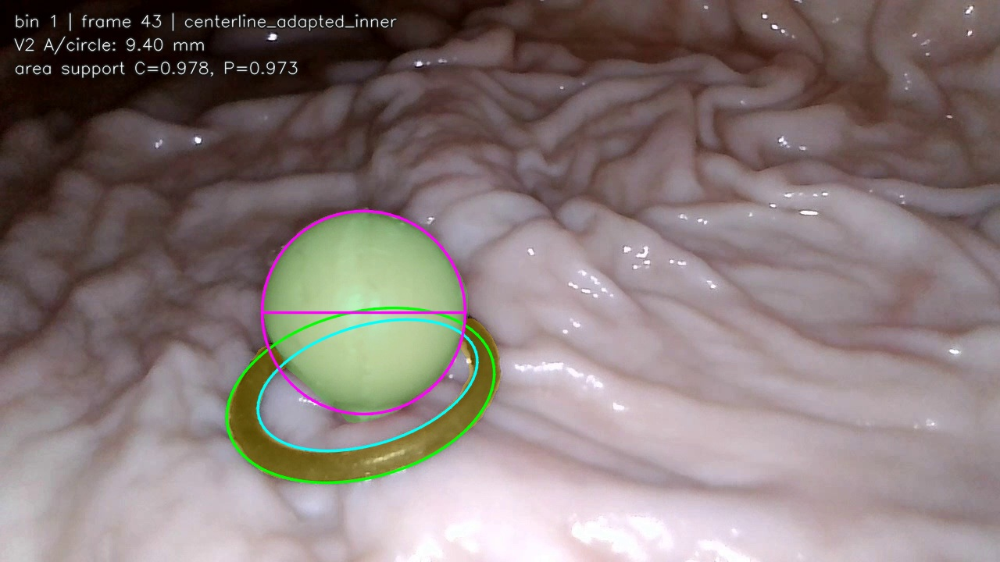
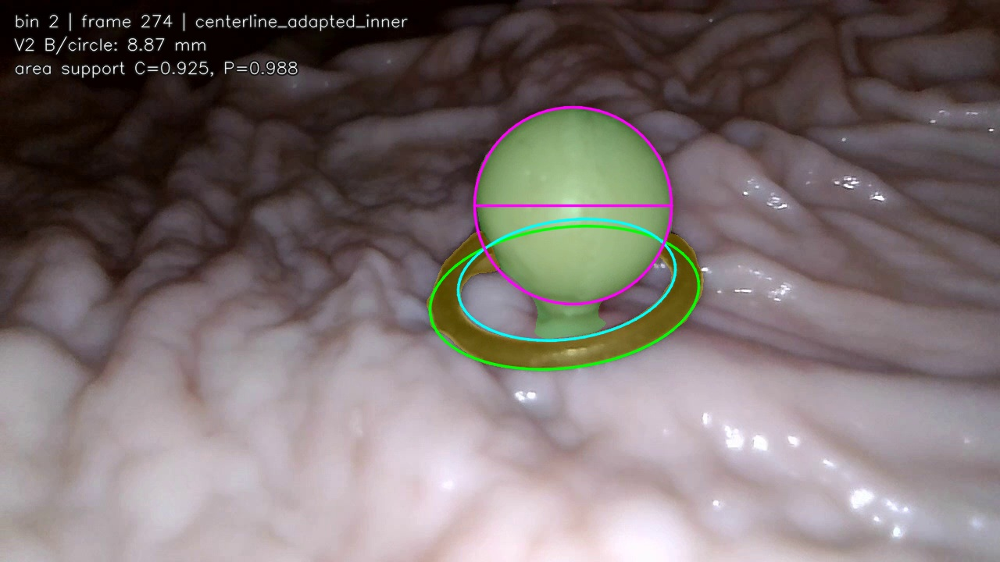
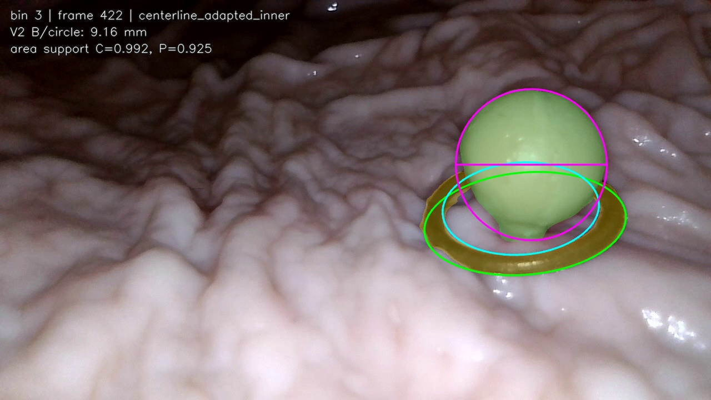
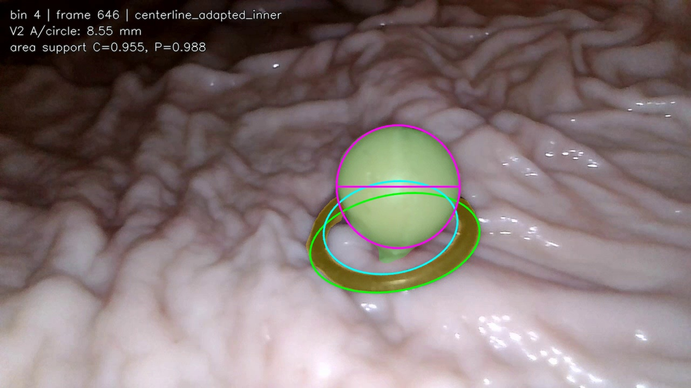
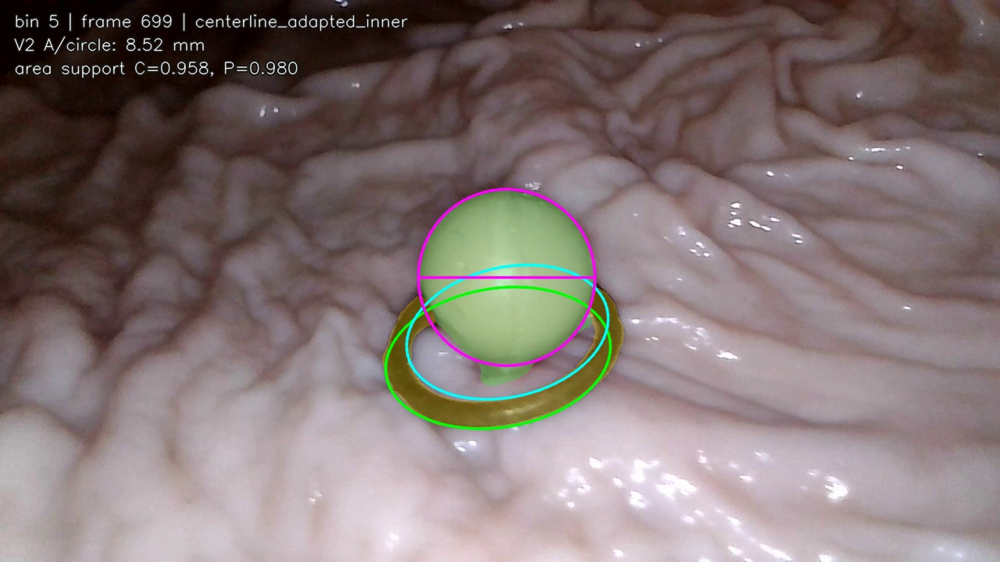
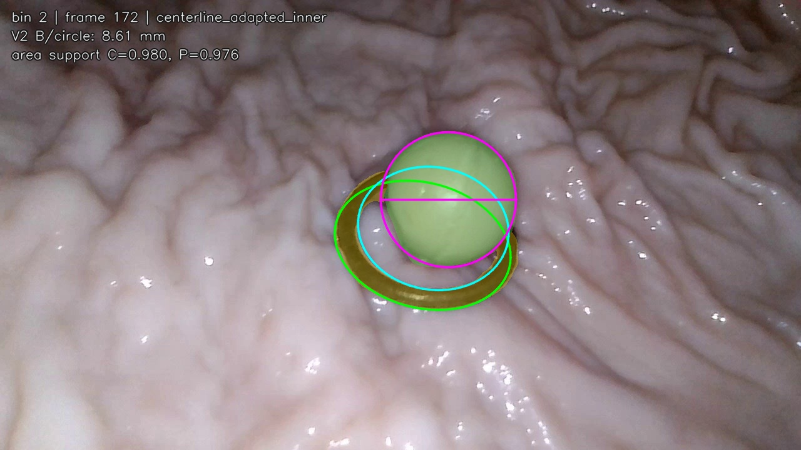
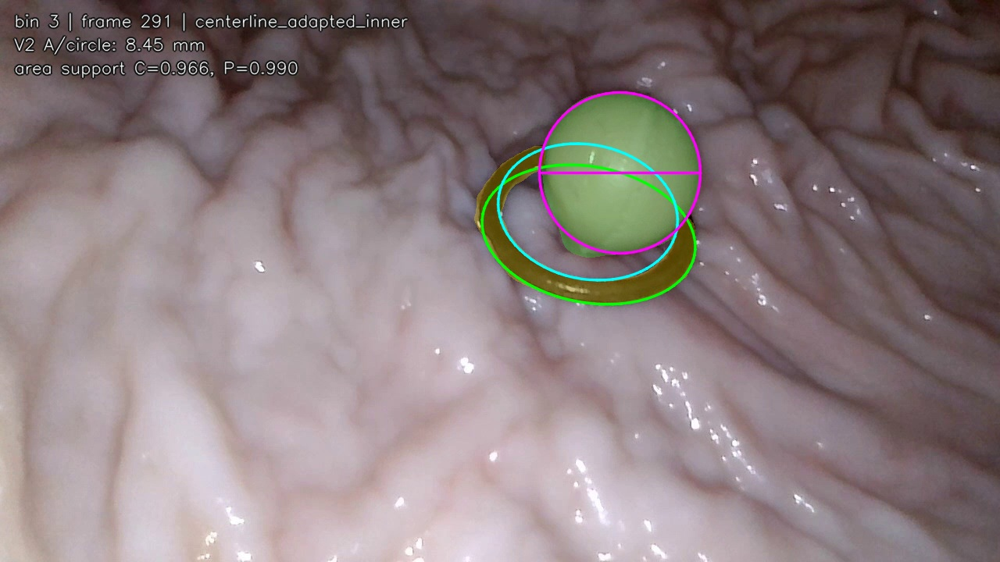
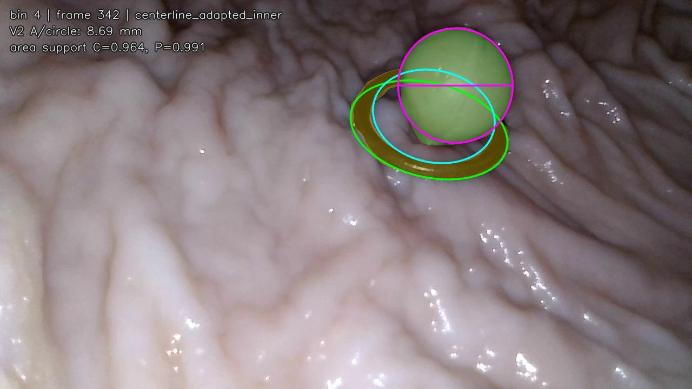
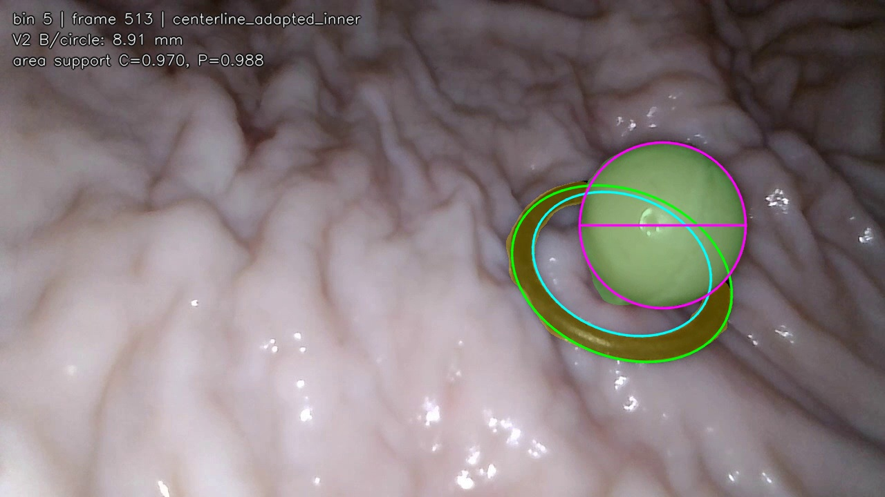

绿色：V2/INIT 息肉 mask；黄色：INIT 环 mask；绿色线：环外缘；青色线：由 outer+mid 反推的内缘；紫色：未修改 V2 的最终测量形状和直径线。

GP_Ip_8.8mm_closed_R10_single_refY_004 | bin 1 | frame 43 Dxy=9.403 mm; C=0.978; P=0.973 centerline_adapted_inner; A/circle; raw_kept
GP_Ip_8.8mm_closed_R10_single_refY_004 | bin 2 | frame 274 Dxy=8.874 mm; C=0.925; P=0.988 centerline_adapted_inner; B/circle; raw_kept
GP_Ip_8.8mm_closed_R10_single_refY_004 | bin 3 | frame 422 Dxy=9.158 mm; C=0.992; P=0.925 centerline_adapted_inner; B/circle; raw_kept
GP_Ip_8.8mm_closed_R10_single_refY_004 | bin 4 | frame 646 Dxy=8.551 mm; C=0.955; P=0.988 centerline_adapted_inner; A/circle; raw_kept
GP_Ip_8.8mm_closed_R10_single_refY_004 | bin 5 | frame 699 Dxy=8.516 mm; C=0.958; P=0.980 centerline_adapted_inner; A/circle; raw_kept
GP_Ip_8.8mm_closed_R10_single_refY_005 | bin 2 | frame 172 Dxy=8.613 mm; C=0.980; P=0.976 centerline_adapted_inner; B/circle; raw_kept
GP_Ip_8.8mm_closed_R10_single_refY_005 | bin 3 | frame 291 Dxy=8.447 mm; C=0.966; P=0.990 centerline_adapted_inner; A/circle; raw_kept
GP_Ip_8.8mm_closed_R10_single_refY_005 | bin 4 | frame 342 Dxy=8.686 mm; C=0.964; P=0.991 centerline_adapted_inner; A/circle; raw_kept
GP_Ip_8.8mm_closed_R10_single_refY_005 | bin 5 | frame 513 Dxy=8.913 mm; C=0.970; P=0.988 centerline_adapted_inner; B/circle; raw_kept